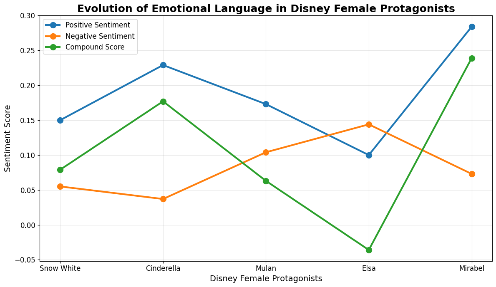
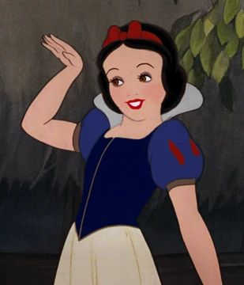
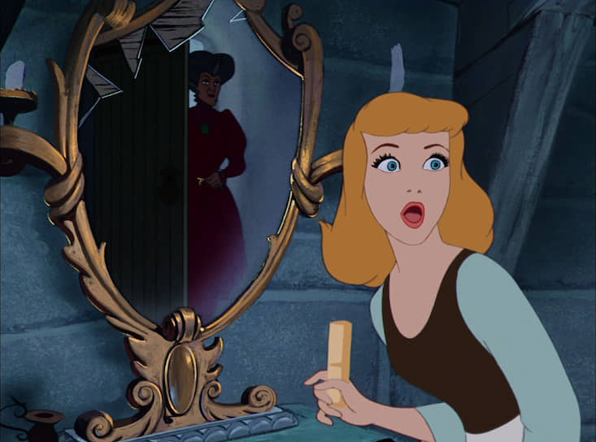
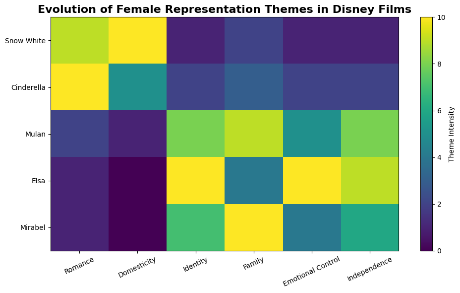
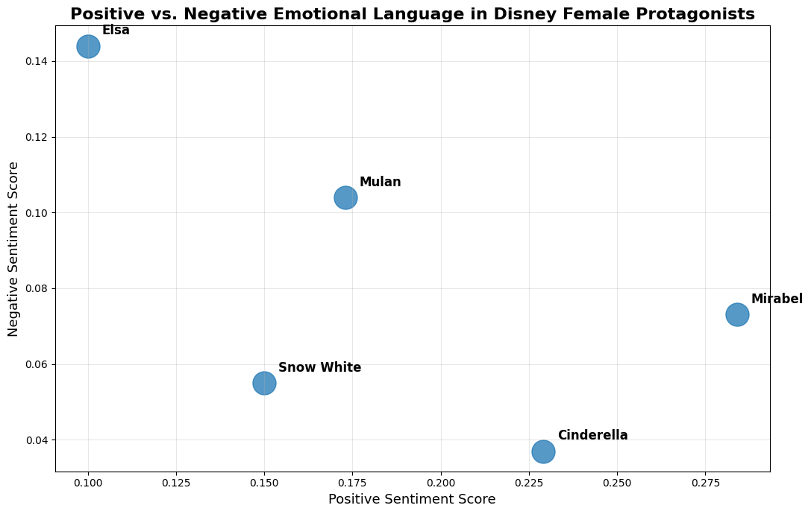
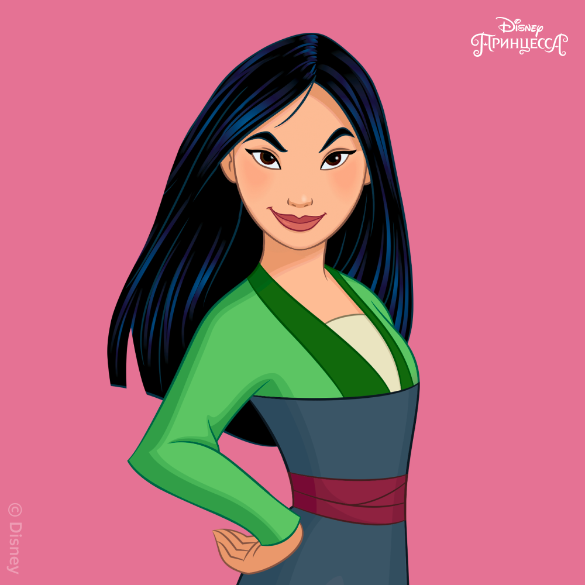

This study explores emotional language and female representation in Disney animated films through computational text analysis. The project examines five protagonists: Snow White, Cinderella, Mulan, Elsa, and Mirabel.
Disney female protagonists have shaped cultural representations of femininity across generations. Earlier heroines reflect romantic idealism and emotional softness, while modern protagonists increasingly emphasize independence, identity, and emotional complexity.
How has emotional language and female representation evolved in Disney female protagonists over time?
The dataset consists of subtitle corpora from five Disney animated films released between 1937 and 2021.
The analysis focuses on Snow White, Cinderella, Mulan, Elsa, and Mirabel.
These methods were used to identify emotional patterns, recurring themes, and historical changes in Disney female representation.

The figure compares sentiment scores across Snow White, Cinderella, Mulan, Elsa, and Mirabel.
Earlier protagonists demonstrate emotionally positive and romantic language, while later characters increasingly reflect identity, emotional conflict, and psychological complexity.



Snow White and Cinderella demonstrate the highest romance and domesticity scores (9–10), reflecting traditional femininity.
Mulan shows stronger identity and independence themes (8–9), while Elsa presents the highest emotional control score (10).
Mirabel demonstrates the strongest family-oriented representation with the highest family score (10).

Mirabel demonstrates the highest positive sentiment score (0.284), while Elsa presents the highest negative sentiment score (0.144).
Cinderella also shows strong emotional positivity (0.229), whereas Mulan demonstrates a more balanced emotional profile.
Overall, the figure illustrates the shift toward greater emotional complexity in later Disney protagonists.
